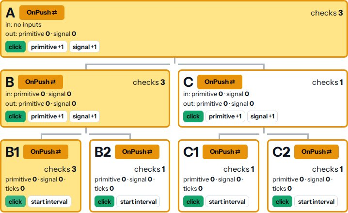

<section data-template="claim-image">
  <div class="block" data-type="text" data-name="title" style="left:64px;top:96px;width:1150px;height:auto;z-index:10;text-align:left">
    <h2>Change detection in one minute</h2>
  </div>
  <div class="block" data-type="text" data-name="claims" style="left:64px;top:220px;width:520px;height:auto;z-index:11;text-align:left">
    <ul>
<li>Checks bindings against their old values</li>
<li><strong>When</strong>: zone.js, after events and timers</li>
<li>Opt-in to Zoneless since v21</li>
<li><span class="accent">Eager</span> (was Default): checks all</li>
<li><span class="accent">OnPush</span>: only the dirty ones</li>
</ul>
<p><br></p>
  </div>
  <div class="block" data-type="image" data-name="image-1" data-keep-ratio style="left:640px;top:220px;width:614px;height:374.6px;z-index:12">
    
  </div>
  <aside class="notes">Before class: npm run start:no-hmr in demo/, open http://localhost:4201/performance/change-detection. All Eager and All OnPush rebuild the tree, so every counter starts again at 1.
Demo: All Eager, click "click" on B1: all seven nodes flash, every counter +1. All OnPush, same click: only B1, B, A flash (the screenshot, after two clicks).
Credit: the demo is modelled on Matthieu Riegler's Angular change detection demo, https://jeanmeche.github.io/angular-change-detection/

Change detection keeps the screen in sync with your data. After something happens, Angular walks the tree from the root and compares every binding with its old value.
So the cost is easy to state: how many components are checked, times how many bindings they have, once per cycle. Two levers: how often does a cycle run, and how many components does each one check?
When: in today's app, zone.js decides. It patches events, timers and promises, and runs a cycle after every one. It knows a task finished, not that anything changed. New apps since Angular 21 are zoneless, and that's exercise 2.
Which: Eager is the old Default, renamed: checked every time the walk passes. OnPush: only when something marked it dirty.
Switch to the demo. All Eager, click "click" on B1. Every node flashes yellow and every counter goes up by one: seven checks for one click on a leaf. Now All OnPush, the same click: only B1, B and A, like the screenshot. Ask the room: why A and B, when nobody clicked them? They're on the path from B1 to the root.
The demo is built on Matthieu Riegler's change detection demo from the Angular team, so the credit goes to him.</aside>
</section>
